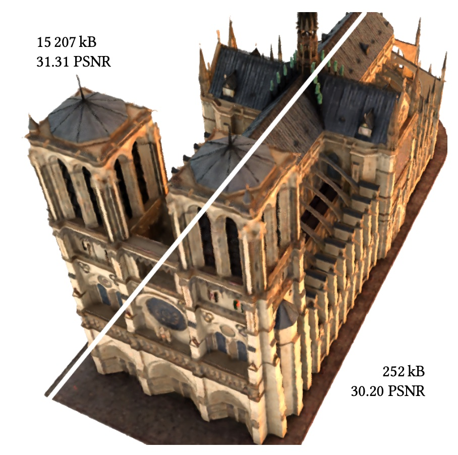
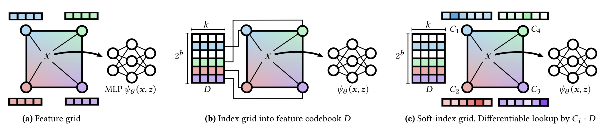
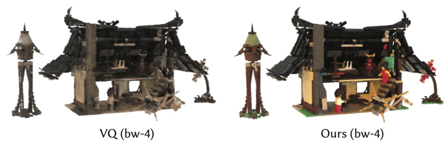
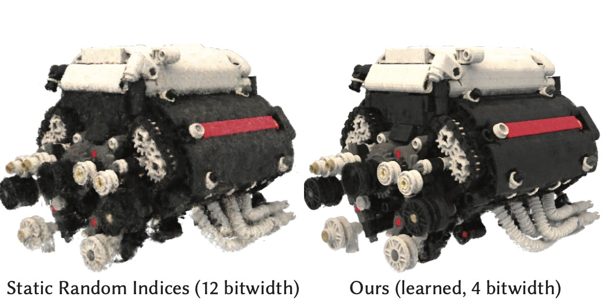
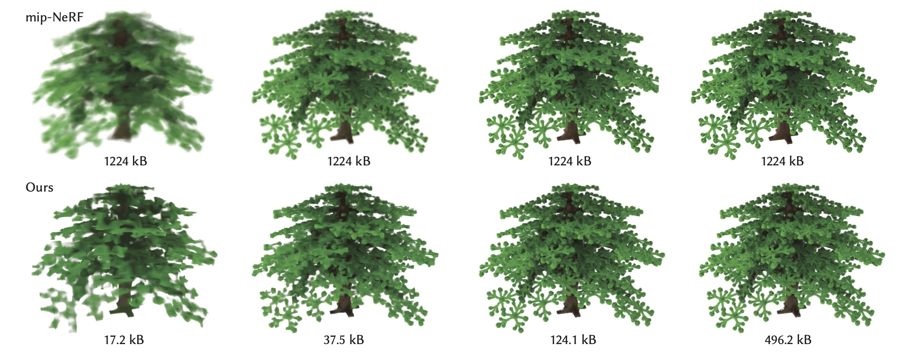
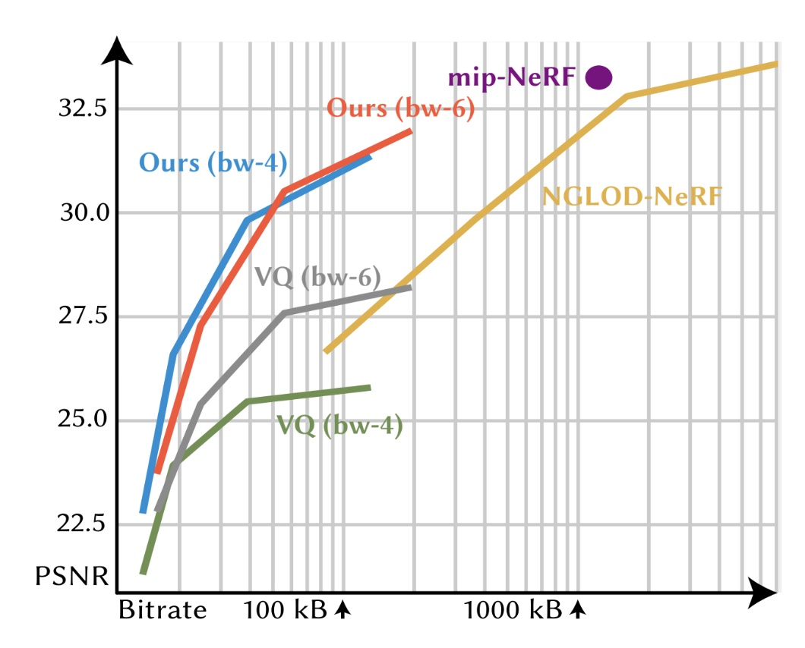
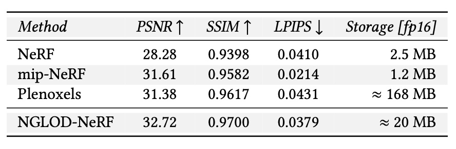
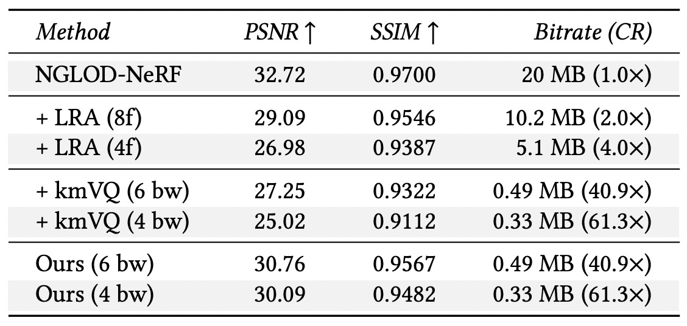
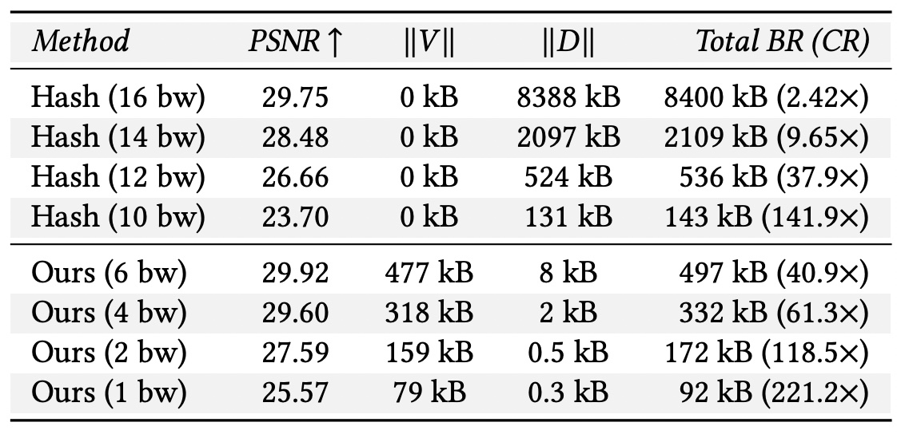

NVIDIA Research
Toronto AI Lab
NVIDIA Research
Toronto AI Lab
Neural approximations of scalar and vector fields, such as signed distance functions and radiance fields, have emerged as accurate, high-quality representations. State-of-the-art results are obtained by conditioning a neural approximation with a lookup from trainable feature grids that take on part of the learning task and allow for smaller, more efficient neural networks. Unfortunately, these feature grids usually come at the cost of significantly increased memory consumption compared to stand-alone neural network models. We present a dictionary method for compressing such feature grids, reducing their memory consumption by up to 100x and permitting a multiresolution representation which can be useful for out-of-core streaming. We formulate the dictionary optimization as a vector-quantized auto-decoder problem which lets us learn end-to-end discrete neural representations in a space where no direct supervision is available and with dynamic topology and structure. Our source code will be available at https://github.com/nv-tlabs/vqad.
Variable Bitrate Neural Fields
Towaki Takikawa, Alex Evans, Jonathan Tremblay, Thomas Müller, Morgan McGuire, Alec Jacobson, Sanja Fidler
Please send feedback and questions to Towaki Takikawa.
You can download the uncompressed figures as a zip (23.7 MB) here.
Top-left shows a baseline neural radiance field whose uncompressed feature grid weighs 15,207 kB. Our method, shown bottom right, compresses this by a factor of 60x, with minimal visual impact (PSNR shown relative to training images). In a streaming setting, a coarse LOD can be displayed after receiving only the first kB of data. All sizes are without any additional entropy encoding of the bit-stream.
(a) shows the baseline uncompressed version of our data structure, in which we store the bulky feature vectors at every grid vertex, of which there may be millions. In (b), we store a compact b-bit code per vertex, which indexes into a small codebook of feature vectors. This reduces the total storage size, and this representation is directly used at inference time. This indexing operation is not differentiable; at training time (c), we replace the indices with vectors C_i of width 2^b, to which softmax is applied before multiplying with the entire codebook. This 'soft-indexing' operation is differentiable, and can be converted back to 'hard' indices used in (b) through an argmax operation.
Post-Process vs. Learned Vector Quantization. We compare applying k-means vector quantization on the feature grid as a post-processing after training, vs. learning vector quantization end-to-end with the same number of codebook entries. We see the k-means quantization has visible discoloration, whereas ours preserves the visual quality.

Compressing geometry. We show how VQ-AD can compress signed distance functions as in NGLOD. Our method introduces visible artifacts in the normals, however it does result in a significant bitrate reduction. We also compare against a quantized Draco mesh which has similar bitrates when entropy coded 2 MB as the decompressed binary .ply mesh).
Qualitative comparison of static and learned indices. We qualitatively compare a hash approach with 12 bitwidth codebooks and our learned indices with 4 bitwidth codebooks which have similar compression rates. We see that our learned indices are able to reconstruct with less noise.
Compressed levels of detail. From left to right: the different mip levels. Top row: mip-NeRF at different cone widths. Although mip-NeRF produces filtered results, they are constant bitrate. Bottom row: Our multiresolution and vector quantized representation. We are able to simultaneously filter and compress the representation, making it suitable for progressive streaming and level of detail.
Rate Distortion Curve. This graph shows the rate-distortion tradeoffs of different methods on the 'Night Fury' RTMV scene, where the y-axis is PSNR and the x-axis is bitrate (in log-scale). Single-bitrate architectures are represented with a dot. For Mip-NeRF (purple), the filtering mechanism can move the dot vertically, but not horizontally. Our compressed architecture (red and blue) has variable-bitrate and is able to dynamically scale the bitrate to different levels of details. Our architecture is more compact than feature-grid methods like NGLOD (yellow) and achieves better quality than postprocessing methods like k-means VQ (gray and green).

Baseline References. This table shows the baseline feature-grid method (NGLOD-NeRF) in comparison to NeRF and mip-NeRF which are state-of-the-art global-methods, and Plenoxels which is also a feature-grid method. We see from the results that NGLOD-NeRF is a strong baseline with similar quality to both. All floats are half precision.
LRA, VQ vs loss-aware VQ (ours). This table shows the comparison between low-rank approximation (LRA), vector quantization (kmVQ) and learned vector quantization (ours) at different truncation sizes (for LRA) and different quantization bitwidths (for kmVQ and ours). We see that across all metrics we see a significant improvement by learning vector quantization. The bitrate is data dependent, so we report average bitrate.
Comparison between random indices and learned indices}. This table shows the effects of learning codebook indices with VQAD at 120 epochs with different quantization bitwidths (bw). To highlight the tradeoff, we list the size of the indices V and codebook D separately. We see that even when storing indices, we are able to achieve higher quality than the hash-based approach.
We would like to thank Joey Litalien, David Luebke, Or Perel, Clement Fuji-Tsang, and Charles Loop for a whole lot of fruitful discussion for this project. We would also like to thank Alexander Zook, Koki Nagano, Jonathan Grasnkog, and Stan Birchfield for their help with reviewing the draft for this paper. This website is mostly derived from the website for NGLOD, which Joey Litalien hugely contributed to.